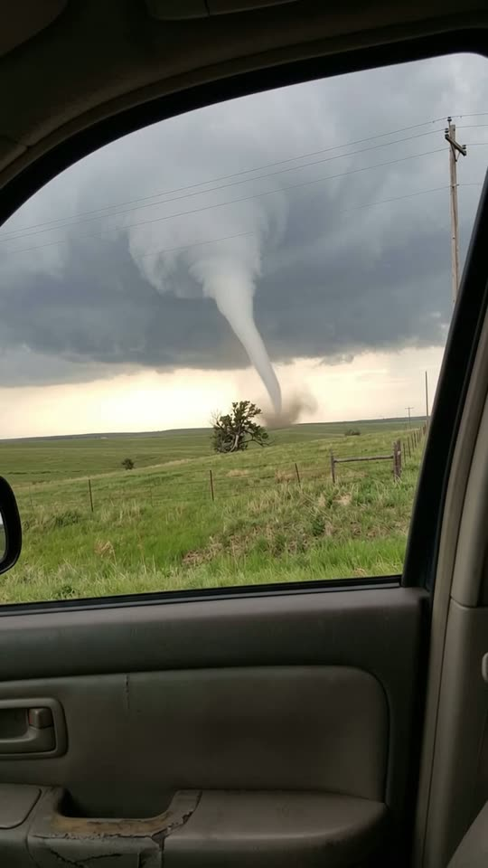
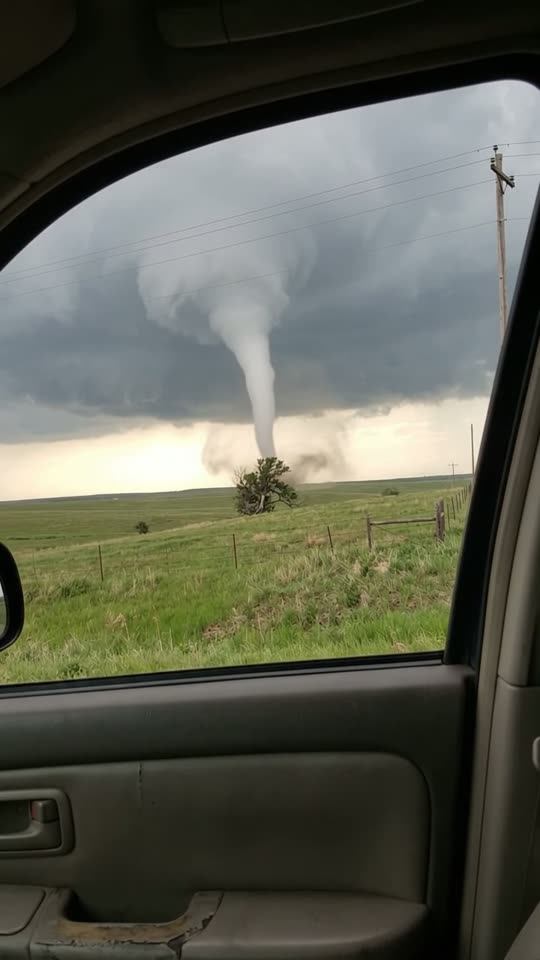
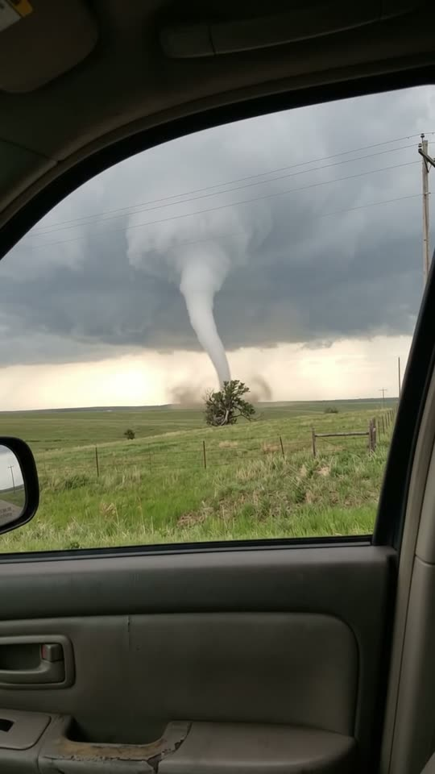
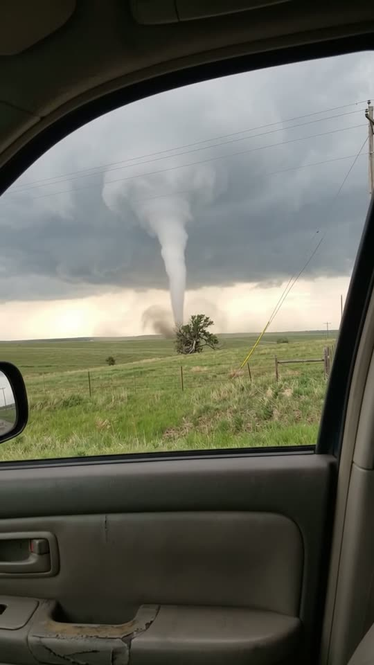

Free prompt pack
One window.One tornado.
A tornado touches down on the open prairie, right beside the only tree for miles, filmed from inside a car. One still image and one prompt, in one take.
Both prompts, in the order I ran them. Tune the radio to unlock each one. Tap the radar to ping it.
The first frame
Shoot it from inside the car. This image is frame one: the open car window, the green prairie, the storm cloud and the tornado already on the ground beside a lone tree.
Watch out
Give the tornado a landmark to stand next to. A lone tree tells you how far away it is and how big it is, without a word on screen.

The prompt 124 words
Real handheld photo taken through the open passenger window of a stopped car on a prairie road: the dark edge of the window frame cuts across the top-left corner and the door sill runs along the bottom. Outside, green rolling grassland hills under a huge dark grey storm cloud, with a bright cream-gold band of light along the horizon. A milky-white tornado hangs from the cloud: wide at the top and streaked with long fibrous wisps, narrowing into a smooth white tube that reaches down behind a lone scraggly tree on the hilltop, a little brown dust swirling at its base. Power lines on wooden poles cross the sky in the foreground, and a barbed-wire fence runs along the hill. Real photo, natural colour.
One column
Ten seconds, one funnel, cloud to ground. Add the image as the reference, set 10 s, 9:16, 720p and audio on, and paste the prompt whole.
- 0–3.0 sit spins up the dust by the tree
- 3.0–6.5 sthe base drifts, the funnel leans
- 6.5–8.5 sa gust reaches the car
- 8.5–10 s"Okay, we gotta go."
Watch out
Never call it a rope. My first try asked for a rope bending into an S, and a white worm appeared in front of the tornado. Call it vapour, one column from cloud to ground.
Fragments



The prompt 1122 words
FORMAT Real handheld storm-chasing video, seen as the finished exported video file: the full picture edge to edge, nothing on top of it. Whatever records the picture is never in frame. One continuous take in real time, no cuts. Vertical frame. The video runs at 24 fps. No frame is repeated. Real time, 1x speed, never slow motion, never a timelapse. SCENE A storm chaser sitting in a stopped car films a tornado through the open window of the car door, on the open prairie. The tornado is already on the ground in the first frame, spinning up brown dust beside a lone tree. Over ten seconds its bottom drifts slowly to the left along the horizon, so the whole funnel leans and bends gently, like a column of smoke in the wind, while the dust cloud at its base grows; then a gust reaches the car and he says "Okay, we gotta go." The take ends on the same single tornado, still on the ground. REFERENCE IMAGE Use it for the car door, the window opening, the prairie, the storm cloud, the horizon light, the tornado's look and position, the lone tree, the fence and the power pole. Everything matches it exactly, zero drift. The tornado moves as described below. THE TORNADO Exactly one tornado: a funnel of condensed vapour, white and grey, hanging from the dark cloud base and touching the ground. Wide and ragged where it leaves the cloud, it narrows steadily down to a slim white funnel that meets the ground in a whirl of brown dust. It is made of cloud, not of anything solid: soft, slightly see-through edges that blend into the cloud above and into the dust below. In every frame it is one continuous column, attached to the cloud at the top and to the ground at the bottom. It is about 1 km away and over a kilometre tall, so everything it does is slow and heavy. LOCATION MAP The camera is inside the car at seat height, looking out through the open window of the car door. The window opening fills the frame from x 0% to 92% and y 5% to 68%; its dark frame curves along the top and the left edge; the door pillar runs down the right edge at x 92-100%; the grey door panel with its handle fills the bottom 32% of the frame; the edge of the side mirror shows at the far left at y 57-62%. Outside: the dark storm cloud fills the sky, its base at y 30%; the bright cream band of light along the horizon at y 40-48%; flat green prairie from y 48% down to the door; a lone tree on the horizon at x 48%, y 47-52%; a wire fence with wooden posts running across the grass at y 52-58%; a wooden power pole at x 93% with wires crossing the top of the sky. FIRST FRAME Exactly as the reference image: the wide funnel leaves the cloud base at x 30-60%, y 20-32%, narrowing down to the ground at x 58%, y 47%, just right of the lone tree, with brown dust whirling at its base; the window frame, the door panel and the power pole in place. Instant read: a tornado on the ground right outside the car window. No delayed reveal. CAMERA Handheld inside the car, almost still: the small natural sway and breathing of hands holding it up, a slight follow of the tornado to the left. It never zooms, never cuts, never pokes out of the window, never turns inside the car. The window opening and the door panel keep the same place in the frame from the first frame to the last. ACTION TIMING 0–3.0 s — The tornado spins in place: the dust at its base whirls faster and rises in a brown cloud beside the lone tree; the wide top churns slowly under the cloud. 3.0–6.5 s — The bottom of the funnel drifts slowly to the left along the horizon, behind the lone tree, while the top stays under the same part of the cloud: the whole funnel leans and its lower half bends gently, like smoke bending in the wind, and grows thinner; the dust cloud at its base widens. 6.5–8.5 s — The dust cloud at the base thickens and spreads across the horizon toward the fence; a gust reaches the car: the grass outside flattens in a wave, the wires on the power pole sway. 8.5–10 s — A man behind the camera says "Okay, we gotta go."; the tornado keeps leaning and turning, one column from the cloud to the ground. Hold to the last frame. PHYSICS AND SCALE Real scale and weight: the tornado is far and huge, so it moves slowly and smoothly; only the dust at its base moves fast. The grass bends in waves with the wind; the wires sway; the car stays still. Nothing flies toward the camera, nothing hits the car. Nothing morphs and nothing new appears in the sky: one tornado, one tree, one fence, one power pole. NO FULL-FRAME EVENTS No lightning, no flash, no dust or rain filling the frame: the tornado, the prairie and the horizon stay visible in every frame of the take. LIGHTING Storm light: the dark grey cloud above, flat and dim, and the bright cream band of light under the storm along the horizon, which backlights the tornado and the lone tree. No other light. AUDIO No music, no score, no narration, no subtitles. Wind roaring and gusting through the open window, grass hissing, a low continuous rumble like a distant freight train, the car's engine idling, his fast breathing. Exactly one spoken line, at 8.5 s, a man behind the camera, tense and quiet: "Okay, we gotta go." Nobody else speaks. LOOK Real handheld storm-chasing footage, seen as the finished exported file: crisp detail, natural colour, slightly flat overcast contrast, light compression, no colour grade, no film grain, no lens flare, no slow motion, never CGI. No camera app interface: no shutter button, no gallery thumbnail, no record button, no icons, no timer, no recording dot, no frame lines. POSITIVE LOCKS Exactly one tornado, one continuous column from the cloud to the ground in every frame. Never a second funnel; never a smooth white tube, hose, snake, worm, ribbon or rope floating in front of it; never a loop or a curl; its bottom never lifts off the ground and never hangs loose. Never a waterspout, never fire, never lightning. No captions, no subtitles, no on-screen text, no watermark, no logos, nothing on top of the picture. ONE TORNADO. ONE COLUMN. ONE WINDOW. NO CUTS. NO INTERFACE. NO SLOW MOTION. NO MUSIC.
Rule 01
Describe the stuff
Vapour, smoke, soft edges that blend into the cloud. Say what it's made of and the model stops drawing a solid object.
Rule 02
Pin both ends
One column, attached to the cloud at the top and to the ground at the bottom, in every frame. A loose end is where a worm starts.
Rule 03
Move it with a cause
Its base drifts left, so it leans and bends like smoke in the wind. A shape to draw, like an S, gets drawn as a new thing.
That's the whole build
Now go chaseyour own storm.
If yours works, send it over. I read every DM and the good ones end up on the account.
@martiiifons